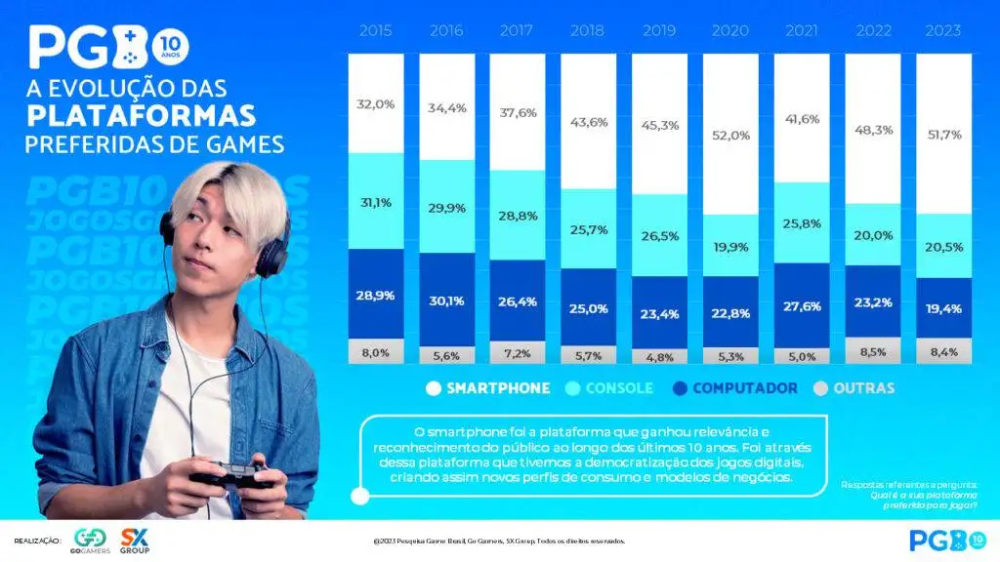

Os jogos mobile evoluíram de simples passatempos para um fenômeno global, transformando a forma como jogamos e nos conectamos. Aqui, exploramos essa trajetória, desde os primeiros títulos até as experiências modernas em smartphones.
Tetris no Hagenuk MT-2000
Tudo começou em 1994, com o lançamento de um celular da Cetelco chamado Hagenuk MT-2000. Embora não tenha feito muito sucesso, esse aparelho abriu as portas para o surgimento de games em dispositivos móveis com a chegada de Tetris e foi o empurrão que a indústria precisava para dar início a um grande e lucrativo mercado.
Snake Game
Com a popularização dos celulares e o rápido crescimento desse mercado, algumas empresas viram a oportunidade perfeita para adicionar novas funções aos aparelhos que antes só faziam ligações e enviavam mensagens. Em 1998, a Nokia lançou modelos que chegavam com três jogos pré-instalados: Memory, Snake e Logic. O famoso "jogo da cobrinha" foi um sucesso gigantesco, servindo com uma diversão casual, porém, rotineira na vida de muitas pessoas. Se antes só era possível se divertir em frente ao video game e uma televisão, agora dava para passar horas com o celular na mão para competir com os amigos para ver quem fazia mais pontos.
Era Java
Em 2002 os primeiros celulares com suporte a Java chegavam ao mercado: Nokia 3410 e Siemens M50. Isso abriu a oportunidade para que não apenas os fabricantes, mas outras empresas, desenvolvessem jogos para celular.
O ambiente no início era bem difícil. Boa parte dos displays eram monocromáticos e com visores que, em sua maioria, não passavam de uma polegada. Para agravar a situação, qualquer jogo deveria caber em apenas 30kb, que era a quantidade de memória reservada para um aplicativo Java. Se o usuário quisesse instalar outro jogo, deveria apagar o anterior para liberar espaço. Os primeiros jogos em Java eram bem rudimentares. Steve Jackson’s Sorcery e Alien Fish Exchange são alguns exemplos.
Os fundadores da Ubisoft decidiram criar outra empresa, dessa vez voltada apenas para os celulares — nasce a Gameloft. Em 2002 ela lançou o seu primeiro jogo, o Siberian Strike. Não demorou muito para outros jogos passarem a seguir a tendência, aquecendo o mercado.
A partir de 2003, houve um grande avanço no mercado, principalmente no Japão. Em pouco tempo, vários títulos já estavam disponíveis em diversas categorias. Depois das telas coloridas, os aparelhos foram evoluindo cada vez mais. Agora um simples jogo poderia ocupar mais de 1MB. Em 2005, a tecnologia 3D entra com Racing Fever GT 3D, seguido de outros jogos. Grandes empresas do mercado de games entravam no universo mobile: Capcom, Namco, THQ, Actvision, Disney, Konami e Eletronic Arts.
Jogos em 3D
Com a evolução dos celulares, os jogos puderam experimentar um salto gigantesco em qualidade gráfica e jogabilidade. Foi entre os anos 2007 e 2009 que vimos os primeiros aparelhos com tela colorida a aparecer no mercado, além dos primeiro games com cenários 3D a chegarem nesses dispositivos.
O que realmente fez com essa fosse conhecida como a era de ouro foi a popularização do jogos para celulares. Apesar de o mundo já ter presenciado o lançamento do primeiro iPhone, foi durante esse período que os aparelhos convencionais – especialmente aqui no Brasil – começaram a se tornar realmente comuns.
Cenário Atual
Segundo dados da PBG, Pesquisa Game Brasil, no ano de 2023 foi percebido um aumento no uso de celulares como a plataforma preferida no mercado brasileiro.
Os celulares são a plataforma mais popular para jogos no Brasil devido à acessibilidade, ampla oferta de jogos gratuitos ou baratos, conveniência de jogar em qualquer lugar e melhorias constantes nos recursos, como gráficos e desempenho.
 Dados da pesquisa demonstram que em 2023 mais de 50% dos usuários preferiam jogos mobile.